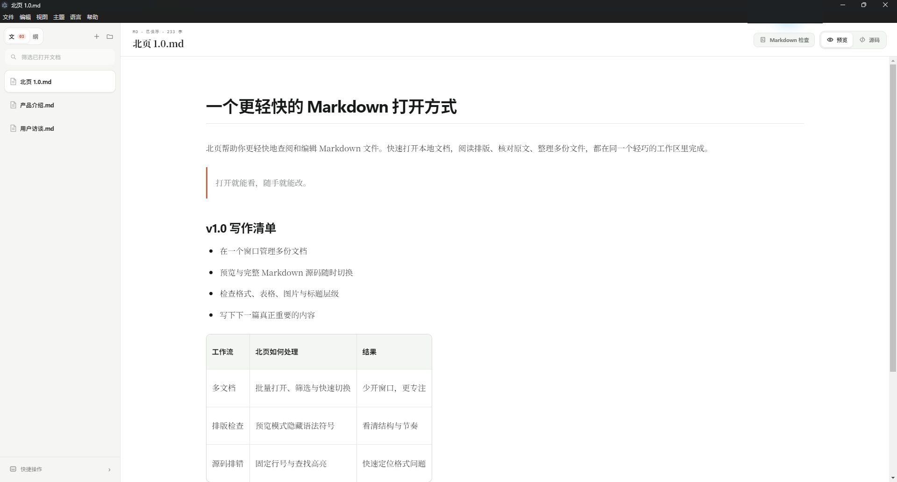

Many files,
one workspace
多份文件，
一个工作区
Batch open, filter, rename, search, and switch without multiplying windows.
批量打开、筛选、改名、搜索和切换，不再堆满窗口。
LOCAL FILES · NATIVE DESKTOP · ZERO ACCOUNTS
本地文件 · 原生桌面 · 无需账号
Open a file and begin. BeiyeMD keeps Preview, complete Markdown source, and every document in one calm local workspace.
打开文件，即刻开始。北页把排版预览、完整源码和多份文档， 放进一个安静、轻巧的本地工作区。
Preview is the default—not a dead end. Switch to full Markdown while keeping your cursor and reading position.
预览是默认入口，而不是单行道。切换完整 Markdown 源码时，光标与阅读位置都会保留。

The tools appear when the document needs them, then recede so the writing can stay in front.
工具在文档需要时出现，其余时间退到一旁，让内容始终站在最前面。
Batch open, filter, rename, search, and switch without multiplying windows.
批量打开、筛选、改名、搜索和切换，不再堆满窗口。
Move between formatted writing and complete Markdown without losing your place.
在排版写作与完整 Markdown 之间切换，不会丢失当前位置。
Catch heading jumps, uneven tables, open fences, trailing spaces, and missing images.
发现标题跳级、表格错列、代码块未闭合、尾随空格和图片缺失。
External file changes refresh live while unsaved local drafts stay protected.
外部修改实时刷新，同时保护尚未保存的本地草稿。
The app opens before a login screen ever could.
没有登录页挡在文档前面。
Your folders remain the structure. Markdown remains the format.
文件夹仍是结构，Markdown 仍是格式。
Read and edit without a connection, subscription, or synchronization service.
无需联网、订阅或同步服务，也能完整阅读和编辑。
FREE · OPEN SOURCE · MIT LICENSE
免费 · 开源 · MIT LICENSE
Download BeiyeMD for Windows or macOS. Every release includes SHA-256 checksums.
下载 Windows 或 macOS 版北页。每个版本均提供 SHA-256 校验文件。
Choose your download 选择适合你的版本